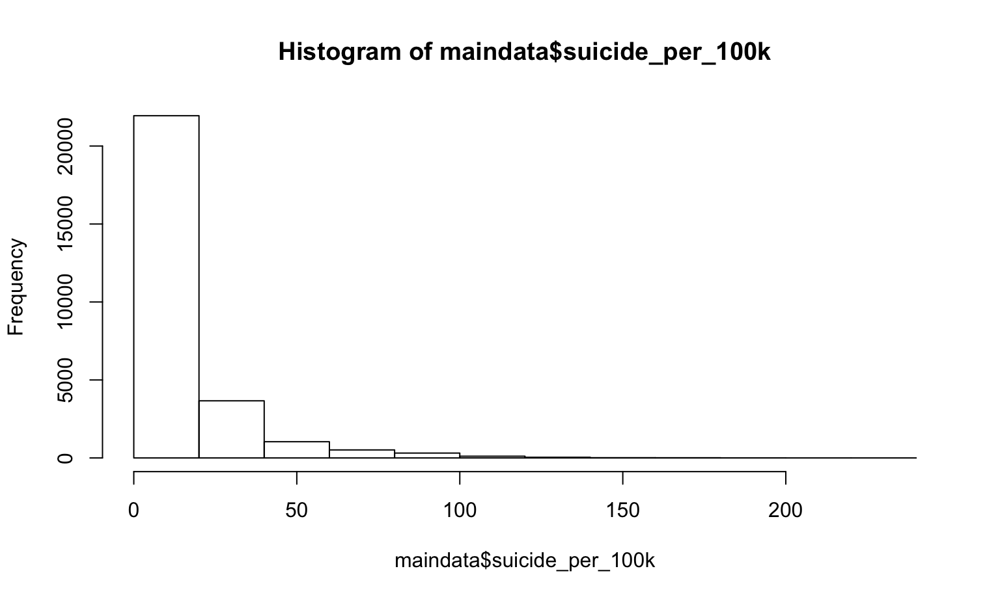
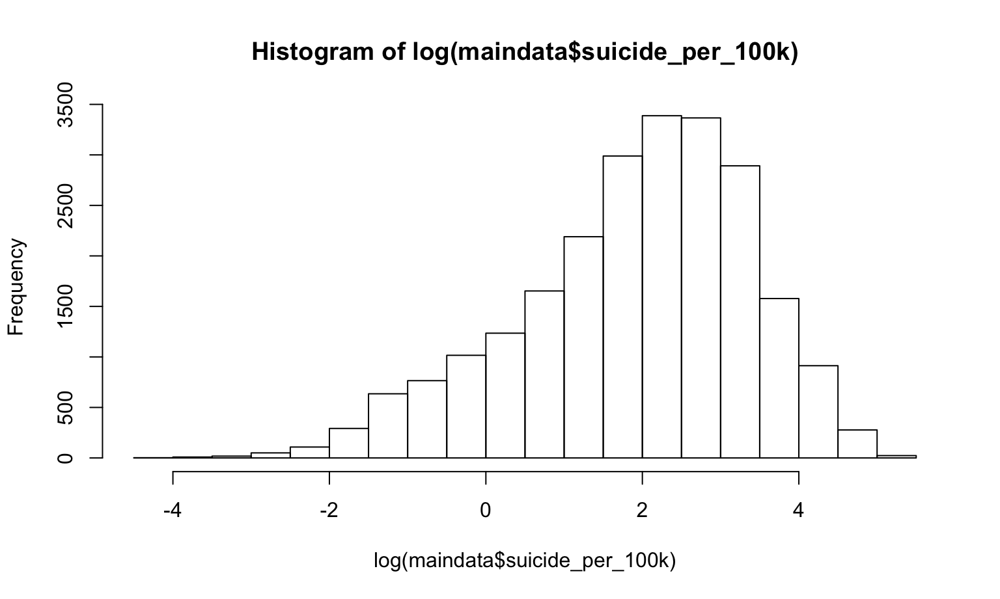
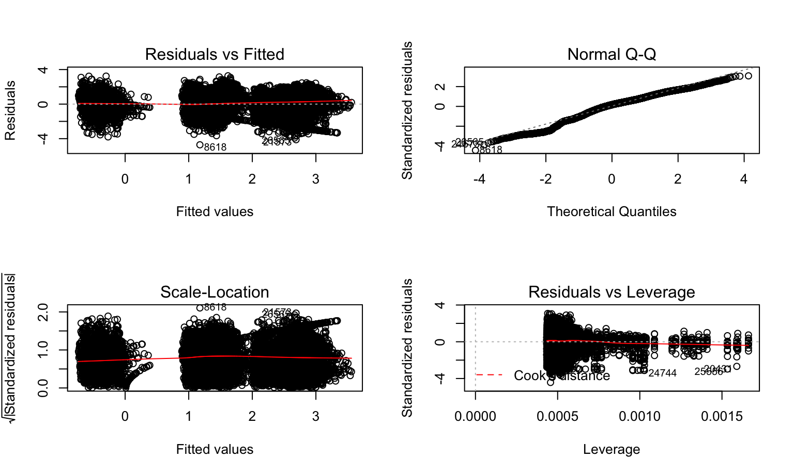

From the distribution plot of suicide_100k_pop, we can see that we need to transform it to satisfy the assumptions for linear model. we used log transformation and changed 0’s to 0.01 for further calculations. Following graphs show that after transformation, the distribution has been much more normal than the previous one.

We chose year, sex, age, \(sex*age\) and gdp_per_capita as our predictor for predicting log suicide rate. The reason behind the variable chosen process is that sex, age and GDP were our main interest at the beginning. We used \(sex*age\) (the interaction term) because we think age and sex might interact together as effect measure of modifier or confounder. For example women in menopause might have higher suicide rate because of hormonal fluctuation.
##
## Call:
## lm(formula = log_suicide ~ year + sex * age + gdp_per_capita,
## data = maindata_log_y)
##
## Residuals:
## Min 1Q Median 3Q Max
## -4.7101 -0.6122 0.1882 0.6922 3.2761
##
## Coefficients:
## Estimate Std. Error t value Pr(>|t|)
## (Intercept) 2.041e+01 1.614e+00 12.649 < 2e-16 ***
## year -9.692e-03 8.074e-04 -12.005 < 2e-16 ***
## sexmale 1.097e+00 3.133e-02 35.021 < 2e-16 ***
## age25-34 8.270e-02 3.133e-02 2.640 0.008300 **
## age35-54 2.699e-01 3.133e-02 8.616 < 2e-16 ***
## age5-14 -1.625e+00 3.133e-02 -51.873 < 2e-16 ***
## age55-74 3.531e-01 3.133e-02 11.272 < 2e-16 ***
## age75+ 4.404e-01 3.133e-02 14.057 < 2e-16 ***
## gdp_per_capita 6.678e-06 3.604e-07 18.530 < 2e-16 ***
## sexmale:age25-34 2.767e-01 4.431e-02 6.246 4.26e-10 ***
## sexmale:age35-54 2.562e-01 4.431e-02 5.783 7.42e-09 ***
## sexmale:age5-14 -8.449e-01 4.431e-02 -19.070 < 2e-16 ***
## sexmale:age55-74 1.647e-01 4.431e-02 3.718 0.000201 ***
## sexmale:age75+ 2.615e-01 4.431e-02 5.903 3.60e-09 ***
## ---
## Signif. codes: 0 '***' 0.001 '**' 0.01 '*' 0.05 '.' 0.1 ' ' 1
##
## Residual standard error: 1.064 on 27646 degrees of freedom
## Multiple R-squared: 0.5109, Adjusted R-squared: 0.5107
## F-statistic: 2221 on 13 and 27646 DF, p-value: < 2.2e-16Based on the summary, we can see that all our main effects and the interaction term are statistically significant. This indicates that there indeed are group difference by age and gender. As we purposed, gender can have different impacts on amount of suicides regarding different age group. An interesting find is that although there are no obvious trend between amount of suicides and GDP per capita based on graph, the regression output shows that GDP per capita does have a statitically significant effect on amount of suicides.
To ensure accuracy, we also examined the assumptions of our model. From plots below, we can see that the residuals are mostly constant but there are 3 clusters(one on the left and two on the right); normality assumption is nearly held; there are about 3 outliers.

Although country and population are not our main interests, we decided to fit a model with those variables in addition to those in previous model. The anova result indicates that at least one of country and population variable is statistically significant. However, due to its limited interpretability, we won’t dig too much about this model.
## Analysis of Variance Table
##
## Model 1: log_suicide ~ country + sex + age + population + gdp_per_capita +
## sex * age
## Model 2: log_suicide ~ year + sex * age + gdp_per_capita
## Res.Df RSS Df Sum of Sq F Pr(>F)
## 1 27547 16188
## 2 27646 31272 -99 -15085 259.29 < 2.2e-16 ***
## ---
## Signif. codes: 0 '***' 0.001 '**' 0.01 '*' 0.05 '.' 0.1 ' ' 1